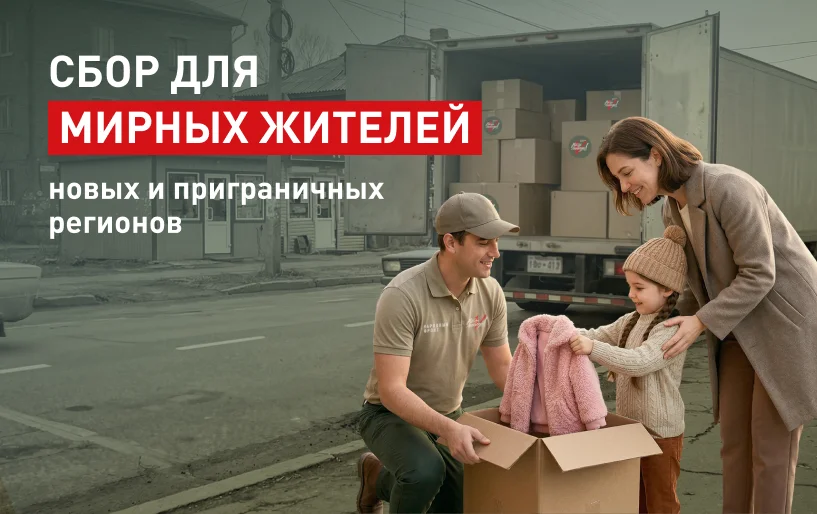

Продукты и лекарства
ПомочьПомощь мирному населению с Полиной Цветковой
Продуктовые, хозяйственные и медицинские наборы для семей новых регионов.
Семьи и дети · Сбор Народного фронта

МИРНЫМ ЖИТЕЛЯМ НОВЫХ И ПРИГРАНИЧНЫХ РЕГИОНОВ РОССИИ
ПРОДУКТОВЫЕ, ХОЗЯЙСТВЕННО-БЫТОВЫЕ И МЕДИЦИНСКИЕ НАБОРЫ, СТРОЙМАТЕРИАЛЫ, ГЕНЕРАТОРЫ И ИНАЯ ПОМОЩЬ ЖЕНЩИНАМ И ДЕТЯМ, ОБЩЕСТВЕННЫМ ОРГАНИЗАЦИЯМ И МОНАСТЫРЯМ В ДНР, ЛНР, ЗАПОРОЖСКОЙ, ХЕРСОНСКОЙ, КУРСКОЙ, БЕЛОГОРОДСКОЙ И ХАРЬКОВСКОЙ ОБЛАСТЯХ
ТАКЖЕ ДЛЯ ДЕТЕЙ НОВЫХ РЕГИОНОВ НАРОДНЫЙ ФРОНТ ВЕДЁТ СПЕЦИАЛЬНЫЙ СБОР
Ещё сборы
Продуктовые, хозяйственные и медицинские наборы для семей новых регионов.
Адресная помощь врачам, учителям, женщинам и мужчинам Донбасса — героям проекта.
Помощь жителям, пострадавшим от ливней и наводнений.